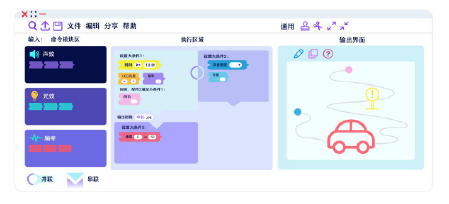
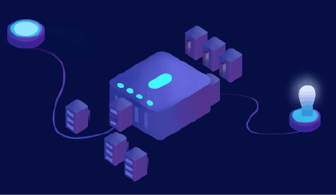

Date:2019-09-12
Use software: Adobe Photoshop
Adobe Illustrator
| 
Software: the microcontroller socket can be connected to the PC side, by the command module, the execution area, the output interface. (1) Command Module (2) Execution Zone (3) Output interface (analog) / accessory movement （4）Pure computer mapping, animation interface: there are many function keys |
|  Hardware: The microcontroller can be inserted into multiple square module transinterfaces, the top of the module is distinguished by icons, and the sensor or accessory interface can be added by individual needs. One interface can connect multiple sensors and the right side connects the corresponding output accessory. |